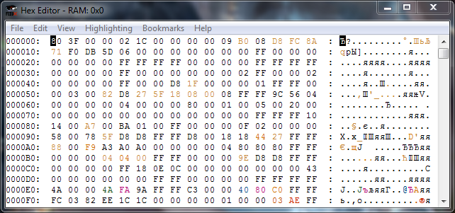
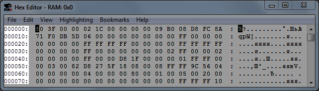
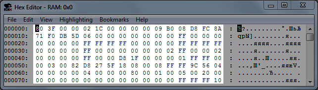
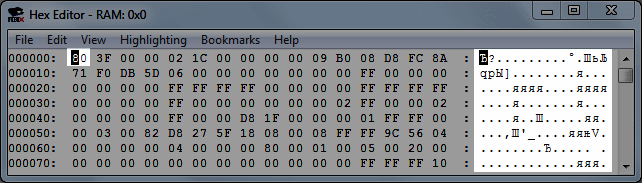
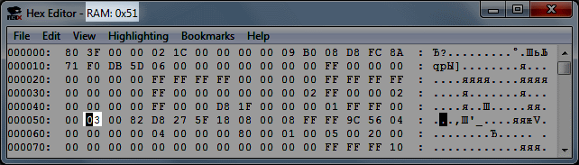
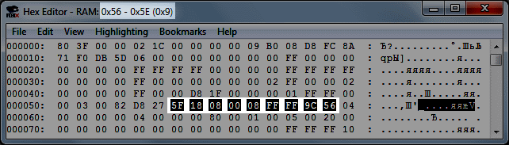

Содержание
Окно открывается в Debug -> Hex Editor, или горячей клавишей. Если ROM не запущен в эмуляторе, окно открыть не получится.

Окно автоматически закрывается при закрытии ROM'а.
Hex Editor отображает данные игры на текущий момент. Данные обновляются 1 раз за кадр.
При использовании Debugger'а в режиме паузы эмулятора данные будут обновляться после выполения каждой отдельной команды.
По умолчанию открыто View -> NES Memory. Окно можно растянуть мышкой по размеру, и перемещаться по нему при помощи стрелок на клавиатуре или колесом мышки (как в браузере).
Слева находятся начальные адреса строки.

В середине в каждой строке по 16 адресов, в каждом адресе 1 байт.

Переменные в адресах при запуске ROM'а зависят от опции эмулятора Config -> RAM Init.
Справа отображена кодировка байтов, по умолчанию ASCII. Выбранный байт подсвечивается и в кодировке справа.

Кодировку можно изменить, подготовив .tbl файл и подгрузив его через File -> Load *.TBL File.
Выбранный адрес отображается в названии окна (без лишних нулей слева и с префиксом 0x), а также указан тип памяти этого адреса, в зависимости от режима вкладки View и самого адреса.

При выделении мышкой сразу нескольких адресов, в названии окна будет указан выделенный диапазон адресов, а также шестнадцатеричное количество выделенных байтов.

Нет. Изменяя байты в RAM, ты делаешь лишь временные изменения.
Чтобы сохранить свои изменения, потребуется сделать хак игры, то есть отредактировать код таким образом, чтобы он вносил нужные тебе изменения в RAM.